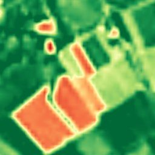
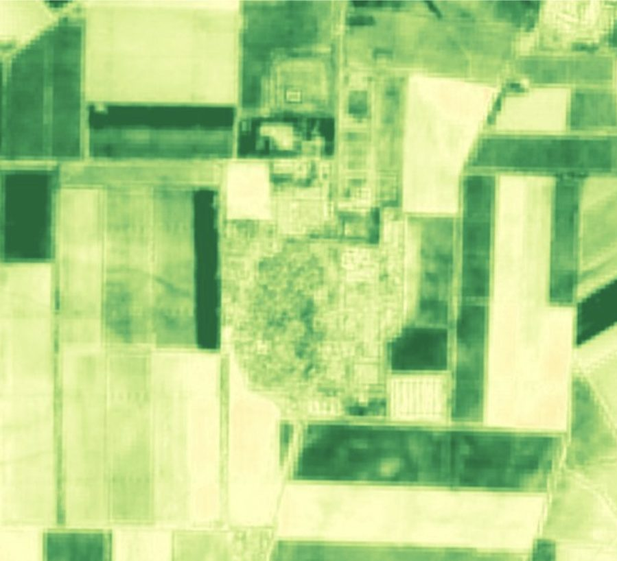
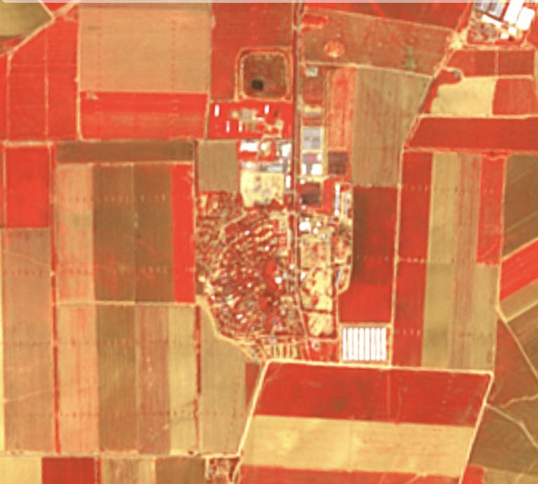

Ten calibrated bands — visible, red-edge and two shortwave-infrared — at 2–4 m GSD, the stack behind every SkySpera spectral analytic. Buy the raw stack, any single index, or the complete analytics.
Most SkySpera analytics are built not on the visible picture but on the full spectrum. Each Sentinel-2 acquisition carries ten calibrated bands from visible through red-edge to two SWIR channels — the wavelengths that reveal vegetation health, water content, burn signatures and mineral alteration invisible to the eye.
SkySpera enhances four bands to 2 m and six (including both SWIR bands) to 4 m, preserving radiometric integrity so derived indices stay physically meaningful. B12 SWIR at 4 m exists nowhere else commercially since WorldView-3 reached end of life in December 2025. From this one stack come NDVI (vegetation), NDMI/moisture indices (water content), NBR (burn severity) and alteration indices (minerals) — all sharing one geometry, the same archive back to 2015, and the same 2–5 day refresh.
Many features (leaks, small fields, alteration outcrops, firebreaks) are sub-pixel at 10–20 m but span multiple pixels at 2–4 m, becoming detectable.
Yes — enhanced from Sentinel-2's 20 m SWIR; the only commercial sub-5 m SWIR since WorldView-3 retired.




Tell us the ground you need to watch — we'll show you what SkySpera can do with it.
Talk to us